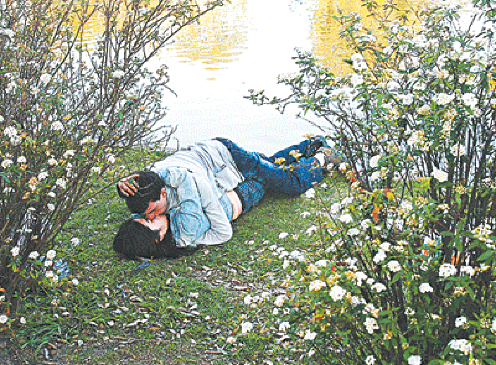

Embarazo no deseado: Aunque existe mucha información sobre educación sexual y métodos anticonceptivos, la inmaduréz en relaciones sexuales a temprana edad lleva a consecuencias irreparables como los embarazos no deseados.
Depresion y transtornos emocionales: La depresión es otro de los problemas que afectan a los adolescentes, pueden ser causados por conflictos familiares, acoso estudiantil (bullying), problemas de aprendizaje, desilusiones amorosas, influencia de amistades inadecuadas, etc.
Relaciones Sexuales Tempranas: Para algunos adolescentes el explorar el mundo de la sexualidad temprana no es un problema sino un placer; sin embargo para muchos de ellos es un dolor de cabeza.

Iniciación en las Drogas: Las drogas siguen siendo un metodo de participación grupal, muchas veces se usan como escape a situaciones familiares y/o personales que los adolescentes no saben manejar.